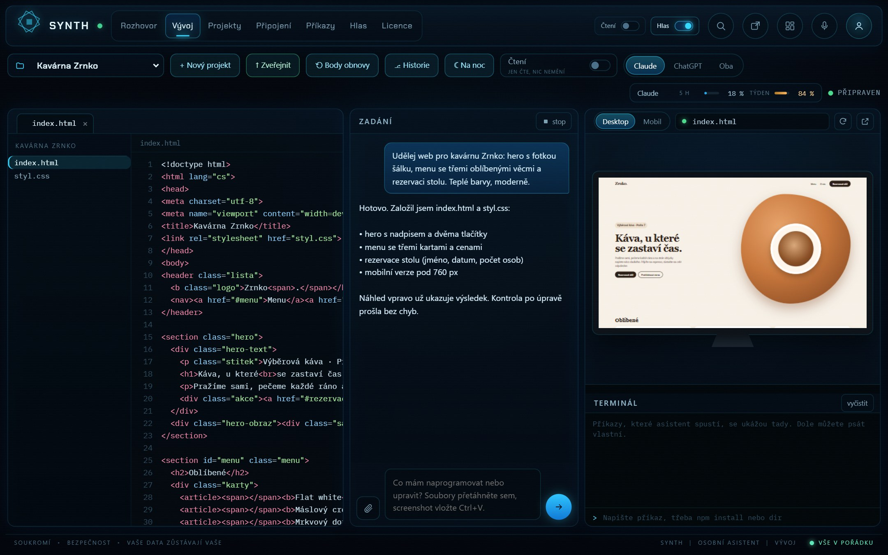

VAIA Tron
Váš osobní asistent
Běží přímo na vašem počítači. Postaví web, upraví soubory, přečte poštu a naplánované úkoly udělá sám, i když spíte.
Napojí se na nástroje, které už používáte
Co umí
Asistent, který opravdu pracuje
Není to chat v prohlížeči. Sahá do souborů, pošty a kalendáře a věci opravdu udělá.
Schopnosti
Weby Soubory Hlas
Weby a aplikace
Od jednoduchého webu po aplikaci s databází. Vidíte okamžitý náhled na počítači i v mobilu a hotovou věc nahraje rovnou na FTP.
Dokumenty a soubory
Pracuje s dokumenty, zapisuje a upravuje soubory přímo ve vašem PC. Čte poštu, hlídá kalendář a z čísel udělá graf.
Mluví a poslouchá
Rozumí řeči i psaní, mluví česky a výstupní hlas si nastavíte podle sebe. Pojmenujete si ho, jak chcete.
Bez API tokenů
Weby i aplikace s databází
Soubory ve vašem PC
Plánované úkoly 24/7
Mluví česky
Funkce
Co všechno zvládne
Jeden asistent místo hromady nástrojů. Tohle všechno umí VAIA Tron hned po instalaci.
- Bez API tokenůStačí aplikace ChatGPT nebo Claude, předplatné mít nemusíte
- Weby a aplikaceI složitější s databází, s okamžitým náhledem
- Práce s dokumentyČte, shrnuje a připravuje dokumenty
- Soubory ve vašem PCZapisuje nové a upravuje stávající soubory
- Tvorba obrázkůPři použití aplikace ChatGPT
- Plánované úlohyNeustálá kontrola naplánovaných úloh
- Procházení webůNajde a přečte, co potřebujete
- Hudba na dashboarduOvládání přímo z dashboardu (Spotify Premium)
- Dashboard podle vásUspořádání dle preferencí, i na druhou obrazovku
- Ovládání z mobiluVčetně vývoje a náhledů
- Rozumí řečiHlas, mikrofon i psaní
- Vytváření grafůZ čísel udělá přehledný graf
- Nahrání na FTPHotový web pošle rovnou na hosting
- Body obnovyVe vývoji si drží body obnovy a historii
- MCP nástrojePřipojení z nabídky Claude, ChatGPT nebo vlastní
- Vlastní hlasVýstupní hlas si upravíte podle sebe
- Drží si paměťPamatuje si, co je pro vás důležité
- Zná vaše projektyKontext rozpracovaných projektů z Claude Code nebo ChatGPT
- Vlastní jménoPojmenujete si ho podle sebe
- ChatGPT + ClaudeJeden dělá, druhý kontroluje
Proč VAIA Tron
Dělá práci. Ne jen odpovídá
Žádné API tokeny.
VAIA Tron nepoužívá API klíče a neúčtuje za slovo. Pracuje přes aplikaci ChatGPT nebo Claude, kterou máte nainstalovanou, a předplatné mít nemusíte.
Jeden dělá, druhý kontroluje.
Propojte ChatGPT a Claude. Jeden úkol udělá, druhý ho zkontroluje. Méně chyb a jistota, že výsledek sedí.
Pracuje, i když spíte.
Naplánované úlohy neustále hlídá a dělá sám. Ranní přehled, týdenní report nebo noční kontrola projektu, a výsledek vám přijde i do mobilu.
Zná vaše projekty.
Navazuje na rozpracované projekty z Claude Code nebo ChatGPT, takže nezačínáte od nuly. Ve vývoji si drží body obnovy a historii, takže se kdykoli vrátíte zpátky.
Asistent v kapse.
Přes mobilní rozhraní ho ovládáte odkudkoli, včetně vývoje a živých náhledů webů. Mluvíte s ním, píšete mu a dostáváte upozornění, když je hotovo.
Dashboard podle vás.
Uspořádáte si ho podle sebe a můžete ho roztáhnout i na druhou obrazovku. Hudbu ze Spotify ovládáte přímo z něj.
Ceník
Vyberte si balíček
Všechny balíčky umí úplně všechno. Liší se jen délkou, a čím delší, tím levnější.
Měsíc
Na vyzkoušení
390Kč
390 Kč měsíčně
- 2 počítače, ke každému 2 telefony
- Všechny funkce a připojení
- Bez API tokenů
- Aktualizace zdarma
Půl roku
Ušetříte 15 %
1 990Kč
vychází na 332 Kč měsíčně
- 2 počítače, ke každému 2 telefony
- Všechny funkce a připojení
- Bez API tokenů
- Aktualizace zdarma
Rok
Ušetříte 25 %
3 490Kč
vychází na 291 Kč měsíčně
- 2 počítače, ke každému 2 telefony
- Všechny funkce a připojení
- Bez API tokenů
- Aktualizace zdarma
VAIA Tron přemýšlí přes ChatGPT nebo Claude. Nepoužívá API tokeny: stačí mít nainstalovanou jejich aplikaci a předplatné mít nemusíte. Průvodce vám vše při instalaci nastaví.
Otázky
Časté otázky
Potřebuju API klíč nebo předplatné?
Ne. VAIA Tron nepoužívá API tokeny. Stačí mít v počítači nainstalovanou aplikaci ChatGPT nebo Claude, předplatné mít nemusíte.
Co potřebuju, aby VAIA Tron fungoval?
Počítač s Windows 10/11 nebo macOS a nainstalovanou aplikaci ChatGPT nebo Claude. Zbytek nastaví průvodce při instalaci.
Jsou moje data v bezpečí?
Asistent běží na vašem počítači. Dokumenty, soubory i paměť zůstávají u vás. Spojení s telefonem je šifrované klíčem ze spárování a náš server zprávy jen předává, přečíst je nemůže.
Umí pracovat s mými soubory?
Ano. Zapisuje nové soubory a upravuje stávající přímo ve vašem PC. Ve vývoji si drží body obnovy a historii, takže se kdykoli vrátíte k předchozí verzi.
Na kolik zařízení licence platí?
Na 2 počítače a ke každému můžete spárovat 2 telefony. Když počítač vyměníte, starý odhlásíte a klíč zadáte na novém.
Umí opravdu česky?
Ano. Píše i mluví česky, rozumí diktování a výstupní hlas si nastavíte podle sebe. Jméno si skloňuje podle toho, jak ho pojmenujete.
Musím umět programovat?
Vůbec ne. Všechno se nastavuje klikáním a s asistentem mluvíte normálně. Weby a aplikace mu prostě popíšete.
Můžu ho ovládat z mobilu, když nejsem doma?
Ano, přes mobilní rozhraní, včetně vývoje a náhledů. Počítač s asistentem přitom musí běžet.
Pojmenujte si svého asistenta.
Máte otázku na VAIA?
Napište nám, rádi poradíme. Nebo si rovnou vyberte balíček.